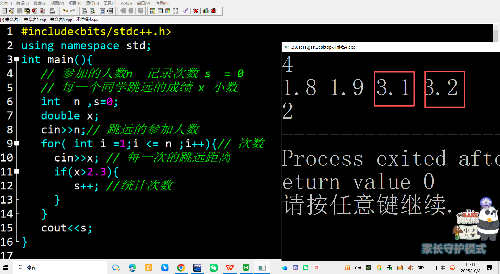
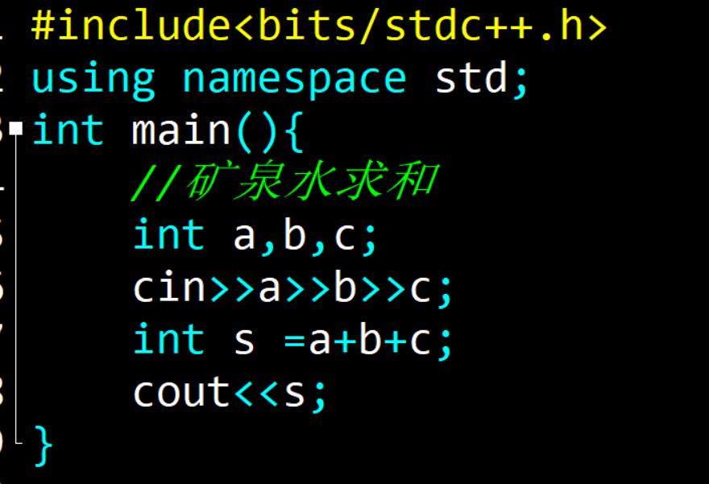
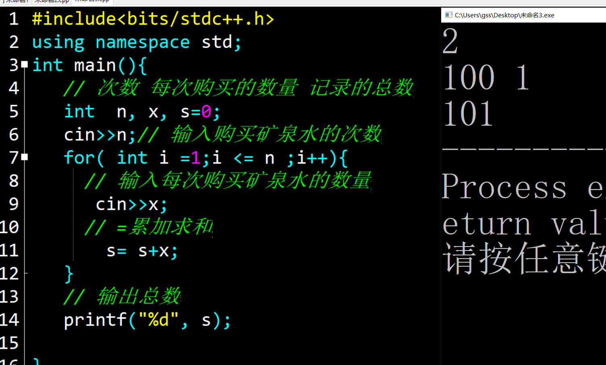
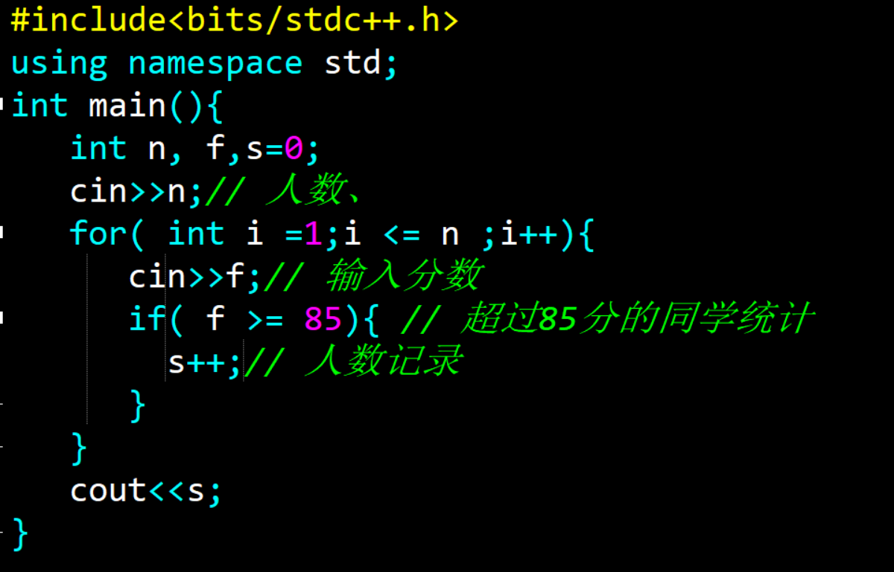
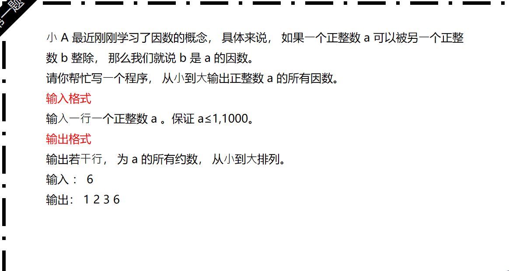
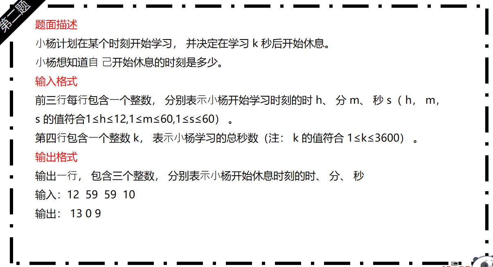
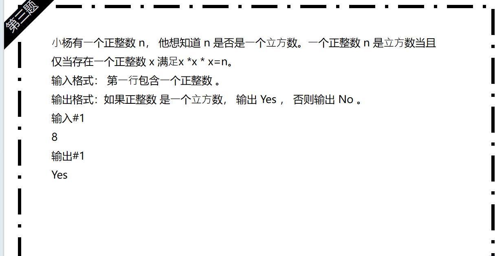
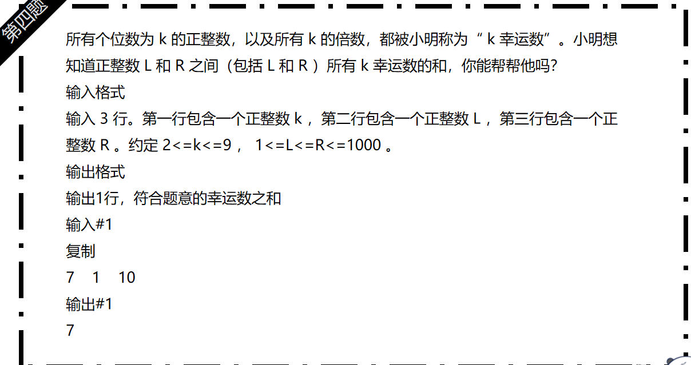

预科37 数值查询
知识点梳理内容
- 变量的应用： 变量是一个可以改变的数值，可以用来存储数值，数值可以是整数，小数，文字等，类似生活中盒子！
-
循环应用：
循环的三要素，开始，结束，增加的数值，循环的内部表示每一次符合条件做的事情。
-
数值的统计：
1.创造统计的数值，初始化从0开始
符合条件的数值进行增加
重点难点解析
-
变量的认识：
1. 理解变量生活的类比
2.变量起名不能重复，区分大小写，只可以使用字母，数字，下划线，期其中包含数字的情况，数字不能放到开头！ -
for 循环应用 ：
循环表示运行的次数，注意三要素，开始，结束的条件，每次的增加数值
表示重复执行的次数，多次做相同的一件事！
-
符合条件的数值统计 ：
初始化变量为数值0，避免产生随机数
程序一般采用循环和分支嵌套，符合条件的数值保留或者记录次数！
配套练习
- 基础语法练习1 ：小杨的采购1-2
- 基础语法练习2 ：跳远训练
- 基础语法练习3：优秀的人数
📸 参考代码与练习说明
【题目】
在小学学校组织的运动会中，有个比赛的项目是跳远成绩，根据往年的成绩来看，如果立定跳远成绩达到2.3米以上，就很有可能获奖！因此每个运动员都回家积极地练习，
小杨同学也报名了这个项目，这天他心血来潮，对比赛的练习做了一个记录，看看自己是否有获奖的可能！
【输入样例】第一行表示今天练习的次数，其余的数据表示每一次立定跳远的长度
【输出样例】 一行，表示小杨在一天的训练中超过2.3米的次数
【测试案例】5
2.18 2.25 2.10 2.31 2.17
【输出样例】 1
【思路】 参加比赛的学生数量n ,每一个同学的跳远成绩，注意是小数类型，统计每一个符合条件的数值，跳远成绩大于2.3米，开始统计的数值s,从数值0开始！
【关键代码】 无;
【说明】 符合条件的数值统计

【题目】
学校要组织一场运动会，小杨和小新，小陶，三个人负责矿泉水的采购，现在请你输入他们三个人依次购买矿泉水的数量，计算他们三人一共购买了多少烧矿泉水？
【输入】3个人依次购买矿泉水的数量
【输出】他们三人一共购买了多少烧矿泉水？
【输入样例】
1 7 5
【输出样例】
13
【思路】 三个变量表示三个同学采购的矿泉水数值，整数类型
【关键代码】 无
【说明】 输入数值求和

【题目】
在学校组织的运动会中，由于其他同学有事，现在只能指派小杨一个同学去采购矿泉水了，小杨准备多次去采购矿泉水，请您输入小杨需要去超市的次数n，后面的n行数据分别表示小杨同学每次采购的矿泉水数量，请你帮助他计算一天下来，小杨一共采购了多少瓶矿泉水？
【输入样例】第一行表示 去往超市的次数n ，其余的数据表示每一次购买矿泉水的数量
【输出样例】 一行，表示当天小杨一共采购的矿泉水数量
【测试案例】4
10 80 20 40
【输出样例】 150
【思路】 多个数值的求和，所以需要对当前的程序使用循环，包含3部分，采购次数n,每次购买的数量x ，数值总和s ,注意初始代码为0
【关键代码】 无，
【说明】 多个数值求和

【题目】
现有一个班一门课程考试的分数，请统计其中成绩为优秀的人数。成绩为优秀的要求是分数大于等于85。
输入：第一行1个整数n，表示分数的个数。（0 < n ≤ 100, ） 第二行n个正整数，表示每一个分数，每个分数小于等于100。
输出一个整数，表示成绩为优秀的人数。
样例输入
10
85 70 99 90 78 55 100 62 88 84
样例输出
5
【思路】输入的数值n表示同学的人数， 每一次同学的考试分数，进行统计的分数统计s,最开始的数值等于0，如果当前的考试分数符合条件，统计加1
【关键代码】 无，
【说明】 循环，解决满足条件的数值统计

作业练习
- 作业练习1 ：因数的查找
- 作业练习2：学习的时间
- 作业练习3：立方数值的计算
- 作业练习3：幸运数值



